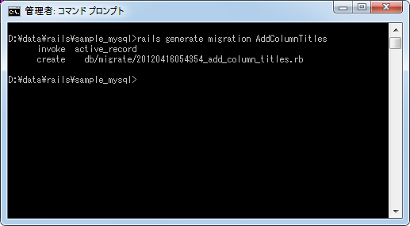
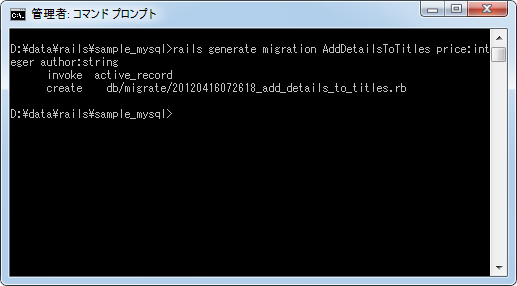
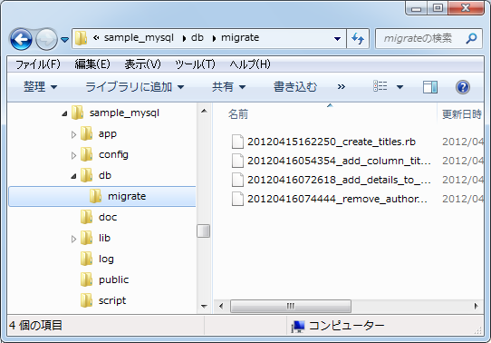
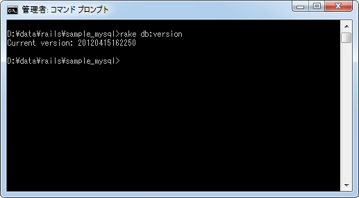
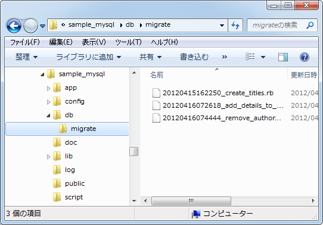
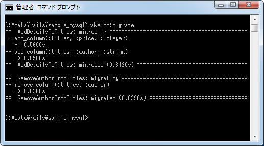
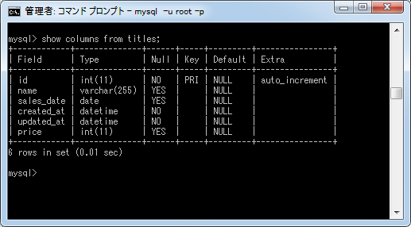

新しいマイグレーションを追加してテーブルを変更
モデルを作成することで自動的にテーブルを作成するためのマイグレーションスクリプトが作成されますが、作成したテーブルにカラムやインデックスを追加するといった変更についてもマイグレーション機能を使って行なうことができます。ここでは新しいマイグレーションスクリプトを作成してテーブルに変更を加える方法について解説します。
1.マイグレーションスクリプトの作成
2.カラムの追加と削除の場合
3.マイグレーションスクリプトの削除
4.マイグレーションスクリプトの実行
マイグレーションスクリプトの作成
マイグレーションを使ってテーブルに変更を行う場合、以前のマイグレーションスクリプトを修正するのではなく、変更を加える為の別のマイグレーションスクリプトを作成し実行します。
モデルを作成する時に自動で作成されるものではなく、新しくマイグレーションスクリプトを作成するには次のように実行します。
rails generate migration クラス名
クラス名は任意ですが、通常は「行なう処理＋テーブル名」のようになります。例えば「AddColumnTitles」です。
では実際に実行してみます。

マイグレーションスクリプトファイルが「db/migrate/20120416054354_add_column_titles.rb」に作成されており中身は次のようになっています。
class AddColumnTitles < ActiveRecord::Migration def up end def down end end
中身が空のupメソッドとdownメソッドが定義されてクラスが記述されています。クラス名は先程実行する時に指定したクラス名となっています。あとは実行した処理をupメソッドの中に記述し、変更を元に戻すための処理をdownメソッドの中に記述します。
class AddColumnTitles < ActiveRecord::Migration
def up
add_column :titles, :place, :string
end
def down
remove_column :titles, :place, :string
end
end
これでテーブルに変更を加えるためのマイグレーションスクリプトが完成しました。
カラムの追加と削除の場合
カラムの追加、またはカラムの削除を行いたい場合、「rails generate migration」を実行する時に特別な規則に従った名前を指定し、引数に追加又は削除するカラム名とデータ型の組み合わせを指定することで、自動的に「add_column」又は「remove_column」メソッドを呼び出す文がスクリプトファイル内に記載されます。
書式は次のとおりです。
rails generate migration クラス名 カラム名:データ型( カラム名:データ型)
クラス名は「AddXXXToYYY」または「RemoveXXXFromYYY」とします。「YYY」にはテーブル名を指定します。「XXX」には追加又は削除するカラム名を指定するのですが違う文字列でも構いません(複数のカラムを同時に追加する場合などは指定できないので)。
では実際に実行してみます。まずはinteger型の「price」カラムとstring型の「author」カラムを追加してみます。
rails generate migration AddDetailsToTitles price:integer author:string

マイグレーションスクリプトファイルが「db/migrate/20120416072618_add_details_to_titles.rb」に作成されており中身は次のようになっています。
class AddDetailsToTitles < ActiveRecord::Migration
def change
add_column :titles, :price, :integer
add_column :titles, :author, :string
end
end
クラス名で指定したテーブルに対して指定した2つのカラムを追加するための文が記述されています。(add_columnとremove_columnの呼び出したがそれぞれ使われるため、upメソッドとdownメソッドではなくchangeメソッドが使われています。詳しくは「up、down、changeメソッド」をご参照下さい)。
次に先程追加したstring型の「author」カラムを削除してみます。
rails generate migration RemoveAuthorFromTitles author:string
マイグレーションスクリプトファイルが「db/migrate/20120416074444_remove_author_from_titles.rb」に作成されており中身は次のようになっています。
class RemoveAuthorFromTitles < ActiveRecord::Migration
def up
remove_column :titles, :author
end
def down
add_column :titles, :author, :string
end
end
クラス名で指定したテーブルに対してカラムを削除するための文が記述されています。(この場合はchangeメソッドではなくupメソッドとdownメソッドを分けて記述する必要があります)。
このように比較的使われるとカラムの追加と削除についてはここでご紹介した方法を使うと少し簡単にマイグレーションスクリプトを作成できます。
マイグレーションスクリプトの削除
作成したマイグレーションスクリプトを実行する前に削除する方法を確認しておきます。現在このアプリケーションでは4つのマイグレーションスクリプトが作成されており、3つはまだ実行されていません。

挙動を確認するために同じようなマイグレーションスクリプトを作成しました。そのため「20120416054354_add_column_titles.rb」と「20120416072618_add_details_to_titles.rb」については内容が一部同じとなっています。そこで「20120416054354_add_column_titles.rb」の方を削除します。
「rails generate migration」コマンドで作成したマイグレーションに関するファイルを削除するには次のコマンドを実行します。
rails destroy migration クラス名
では実際に試してみます。コマンドプロンプトを起動し、MySQL用のアプリケーションのルートに移動し次のようにコマンドを実行して下さい。
rails destroy migration AddColumnTitles
「rails generate model migration」で作成されたファイルが全て「rails destroy migration」で削除されていることが確認できます。
マイグレーションスクリプトの実行
では作成したマイグレーションスクリプトを実行してテーブルに変更を加えてみます。実行する前に現在のバージョンを確認しておきます。

現在のバージョンは「20120415162250」です。この時点で実行されていないマイグレーションスクリプトは2つあります。

それではマイグレーションスクリプトを実行します。コマンドプロンプトを起動しアプリケーションルートに移動後、次のように実行して下さい。
rake db:migrate

実行結果を見て頂くとお分かり頂けるように2つあった実行されていないマイグレーションスクリプトがバージョンが低い順に実行されていることが分かります。
では再度バージョンを確認しておきます。
バージョンが「20120415162250」から「20120416074444」に変更されています。
2つのマイグレーションスクリプトが実行された結果、「price」カラムと「author」カラムがまず追加され、その後で「author」カラムが削除されていますの「price」カラムだけが追加されているはずです。ではMySQLに接続して確認してみます。

「price」カラムだけが追加されているのが確認できます。
( Written by Tatsuo Ikura )

著者 / TATSUO IKURA
初心者～中級者の方を対象としたプログラミング方法や開発環境の構築の解説を行うサイトの運営を行っています。